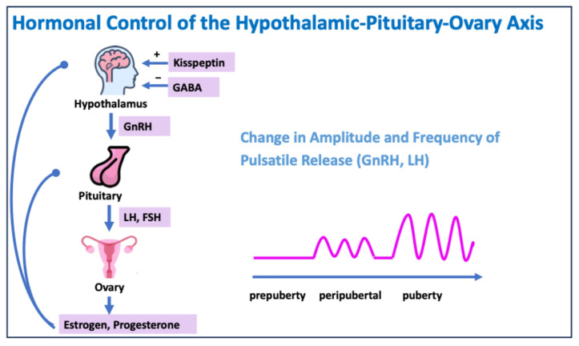

Página 1 · Revisão do ciclo menstrual
Por que uma revisão de ciclo começa com uma menina de 12 anos sangrando
Rafaela tem 12 anos e sangra fora de hora. Antes de dar nome ao sangramento — o que precisa estar funcionando para ela menstruar direito? A resposta não está no útero dela, mas no ciclo inteiro. É esse enigma que a fisiologia vai montar, elo a elo, até a Rafaela sair decodificada.
Caso 2 · Rafaela, 12a
Corredor de Casos · gineco- Ficha
- 12 anos, menarca aos 11; ciclos de 20 a 50 dias, duração 3 a 10 dias. Nega sexarca. Exame físico normal, sem instabilidade hemodinâmica.
- Exames
- Hemograma e coagulograma normais.
- Hipótese
- Sangramento irregular + coagulograma normal nos primeiros anos de vida reprodutiva → imaturidade do eixo (padrão anovulatório). Decodificação prometida.
A ficha da Rafaela: o que exatamente está fora de hora
Rafaela tem 12 anos e foi levada ao ginecologista pela mãe, Dora, por irregularidade menstrual. A menarca veio aos 11 anos, seguida de 4 meses sem menstruar; hoje os ciclos variam de 20 a 50 dias, com duração de 3 a 10 dias — quer dizer, ora demora a vir, ora dura tempo demais. Ela nega sexarca, continua nas atividades habituais (sangra, mas o sangramento não atrapalha o dia a dia), tem exame físico normal e compatível com a idade, sem sinais de instabilidade hemodinâmica, e os exames hematimétricos e o coagulograma estão normais. Guarde cada um desses dados: eles não são enfeite de história — são exatamente o que vai podar os ramos do diferencial daqui a pouco.
Por que discutir sangramento numa revisão de ciclo
Parece estranho abrir a fisiologia do ciclo com um caso de sangramento, mas a lógica é direta: o diferencial do sangramento da Rafaela exige entender o ciclo. É o ciclo que explica o que está acontecendo com ela — sem a base fisiológica, o sangramento vira só um sintoma sem endereço. E essa base sustenta muito mais adiante: não há como discutir amenorreia, síndrome dos ovários policísticos nem contracepção sem o ciclo na mão, e o diferencial do sangramento estrutural — mioma, pólipo, adenomiose — é outro capítulo. Aqui a tarefa é o alicerce.
Se tivesse iniciado a vida sexual: gravidez e infecção
O primeiro ramo do diferencial nasce de uma pergunta: e se ela tivesse iniciado a vida sexual? Aí seria dever de cuidado pensar em gravidez — mesmo aos 12 anos, é uma realidade a considerar — e em infecção: doença inflamatória pélvica (DIP), cervicite, possíveis já nos primeiros anos da vida reprodutiva. Como a Rafaela nega sexarca, esses dois ramos perdem força de largada, mas é preciso tê-los levantado — a banca gosta de esconder a sexarca no enunciado.
A coagulopatia e sua pegadinha: ela vem REGULAR
O ramo que a banca ama é a coagulopatia — uma doença de von Willebrand ou uma PTI que se manifesta na adolescente como primeiro alerta, já que ela nunca teve sangramento importante, cirurgia ou teste da cascata. Mas aqui mora a armadilha: o clássico da coagulopatia é vir com ciclo REGULAR (na época certa) e fluxo muito intenso — e não com ciclo irregular. O aluno desavisado chuta coagulopatia diante de "sangramento fora de hora"; o aluno afiado lembra que coagulopatia é hipermenorragia pontual e regular, não irregularidade. Com coagulograma e hematócrito normais e um sangramento irregular, a Rafaela deixa de ter a coagulopatia como principal suspeita.
Menacme e a hipótese principal: o eixo ainda imaturo
A Rafaela acabou de entrar no menacme — a vida reprodutiva, o intervalo entre a menarca e a menopausa. E é justamente nos primeiros ~2 anos dessa vida reprodutiva que o eixo hipotálamo-hipófise-ovário ainda não tem interação madura nem pulsatilidade estável. Sem sexarca (afasta obstétrica e, a princípio, infecção), com coagulograma normal e sangramento irregular (afasta coagulopatia como principal), sobra o eixo: a hipótese principal numa menina nos primeiros dois anos de vida reprodutiva com sangramento irregular e coagulograma normal é o descontrole / imaturidade do eixo — um padrão anovulatório — que tende a regularizar em ~2 anos.
O cuidado com o excesso de SOP na adolescente
Antes de fechar, um último aviso de banca: cuidado com o excesso de diagnóstico de síndrome dos ovários policísticos (SOP) na adolescente. A irregularidade menstrual e a acne são típicas da idade — hormonais, puberais — e facilmente rotulam de SOP uma menina que não tem SOP. Carimbar SOP aos 12 anos, no meio da maturação fisiológica do eixo, é o erro clássico. Aqui a SOP entra só como semente; o que importa é não sobrediagnosticá-la.

O eixo hipotálamo-hipófise-ovário e, ao lado, o aumento progressivo da amplitude e da frequência dos pulsos de GnRH/LH da pré-puberdade à puberdade. É essa maturação que ainda está incompleta na Rafaela: nos primeiros anos, a pulsatilidade instável explica o padrão anovulatório.
Anthon C, Steinmann M, Vidal A, Dhakal C. Menstrual Disorders in Adolescence: Diagnostic and Therapeutic Challenges. J Clin Med. 2024;13(24):7668, Figure 2. Licenciada sob CC BY 4.0. Fonte: doi.org/10.3390/jcm13247668.
figura de referência — esquema fisiológico, não exame de paciente (o exame da Rafaela é normal)Menina de 12 anos, sangramento uterino anormal — quais causas?
toque para revelar cada ramo
Quiz — fixação
Rafaela, 12 anos, menarca aos 11, ciclos de 20 a 50 dias com duração de 3 a 10 dias, nega sexarca, exame físico normal, hemograma e coagulograma normais. A hipótese principal é:
- C — a virada. Menina nos primeiros ~2 anos de vida reprodutiva, sangramento irregular e coagulograma normal = imaturidade do eixo (anovulação), a causa mais frequente do sangramento uterino disfuncional na adolescente, que tende a regularizar em ~2 anos.
- A. a pegadinha-mãe: o clássico da coagulopatia é ciclo REGULAR + fluxo muito intenso, não irregular; e o coagulograma normal a afasta como principal.
- B. é o sobrediagnóstico a evitar — irregularidade e acne são fisiológicas da puberdade; carimbar SOP aos 12 anos é o erro clássico.
- D. gravidez exigiria sexarca, que ela nega.
- Por que cair na (A). o aluno associa "sangramento fora de hora" a "problema de coagulação" no automático, ignorando que coagulopatia bagunça o quanto, não o quando.
O achado que MAIS afasta a coagulopatia como principal suspeita na Rafaela é:
- B — a virada. A coagulopatia clássica vem regular + fluxo intenso; o padrão irregular já não casa, e o coagulograma normal fecha a porta.
- A. a idade até favorece considerar coagulopatia como primeira manifestação — não afasta.
- C. negar sexarca afasta gravidez e infecção, não coagulopatia — são podas diferentes.
- D. exame físico normal é inespecífico aqui.
- Por que cair na (C). confunde-se o ramo que a sexarca poda (obstétrico/infeccioso) com o ramo que o coagulograma poda (hematológico).
Tudo começa num regente: antes de o folículo crescer ou o endométrio proliferar, alguém precisa dar o ritmo — e esse ritmo decide se a hipófise solta FSH ou LH.